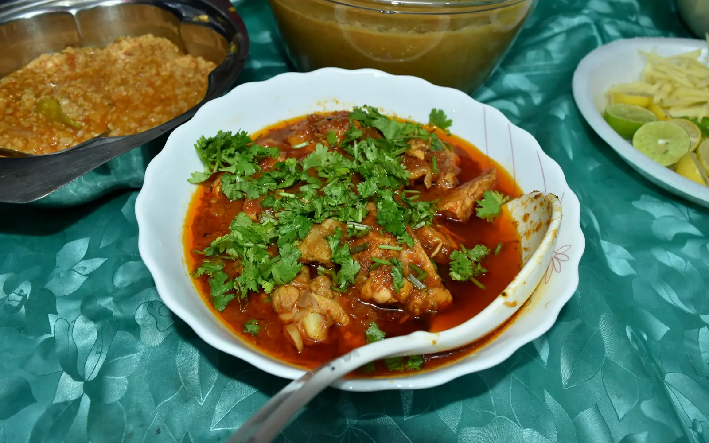

17 dishes
Rajasthani
Dal, gatte and desert flavours
Pick a dish and cook it tonight.
01
Dishes
11 recipes Gatte ki Sabzi55 min · Hard
Gatte ki Sabzi55 min · Hard Kadhi Pakora55 min · Medium
Kadhi Pakora55 min · Medium Ker Sangri40 min · Medium
Ker Sangri40 min · Medium Bajre ki Roti30 min · Hard
Bajre ki Roti30 min · Hard Mirchi Vada35 min · Medium
Mirchi Vada35 min · Medium Pyaaz Kachori60 min · Hard
Pyaaz Kachori60 min · Hard Dal Baati Churma90 min · Hard
Dal Baati Churma90 min · Hard Panchmel Dal50 min · Medium
Panchmel Dal50 min · Medium Papad ki Sabzi25 min · Easy
Papad ki Sabzi25 min · Easy Mangodi ki Sabzi35 min · Medium
Mangodi ki Sabzi35 min · Medium Gatte ka Pulao55 min · Medium
Gatte ka Pulao55 min · Medium02